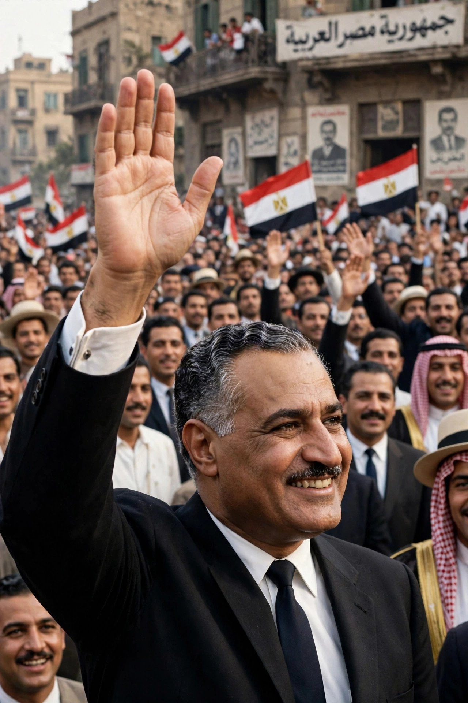

| Gamal Abdel Nasser | |
|---|---|
 | |
| President of Egypt | 23 June 1956 – 28 September 1970 |
| Born | 15 January 1918, Alexandria, Egypt |
| Died | 28 September 1970 (aged 52), Cairo, Egypt |
| Predecessor | Muhammad Naguib |
| Successor | Anwar Sadat |
Gamal Abdel Nasser Hussein (15 January 1918 – 28 September 1970) was an Egyptian politician who served as the second president of Egypt from 1954 until his death in 1970. Nasser planned the 1952 overthrow of the monarchy and was the moving force behind the Egyptian revolution; he became the pre-eminent leader of the Arab world and a leading figure of the Non-Aligned Movement.
Born in Alexandria, Nasser pursued a career in the army, serving in the 1948 Arab–Israeli War, where his experience of defeat and corruption under King Farouk deepened his resolve. He founded the clandestine Free Officers movement, which seized power in the coup of 23 July 1952. After a power struggle with the revolution's figurehead, Muhammad Naguib, Nasser became prime minister in 1954 and president in 1956.
When the United States and Britain withdrew an offer to finance the Aswan High Dam, Nasser responded on 26 July 1956 by nationalising the Suez Canal Company. Britain, France and Israel invaded Egypt in the ensuing Suez Crisis, but overwhelming American and Soviet pressure forced their withdrawal, transforming Nasser into a hero across the Arab world. He promoted pan-Arabism and "Arab socialism": land reform, nationalisation of banks and industry, and construction of the Aswan High Dam with Soviet help. In 1958 Egypt and Syria merged into the United Arab Republic, which collapsed in 1961 when Syria seceded.
Egypt's intervention in the North Yemen Civil War drained its resources, and in June 1967 Israel destroyed the Egyptian air force and occupied the Sinai Peninsula in the Six-Day War. Nasser announced his resignation, but massive popular demonstrations brought him back to office. He rebuilt the armed forces, fought the War of Attrition along the canal, and accepted the Rogers Plan ceasefire in 1970. He died of a heart attack on 28 September 1970, hours after brokering a ceasefire between Jordan and the PLO; millions attended his funeral in Cairo. He was succeeded by Anwar Sadat.